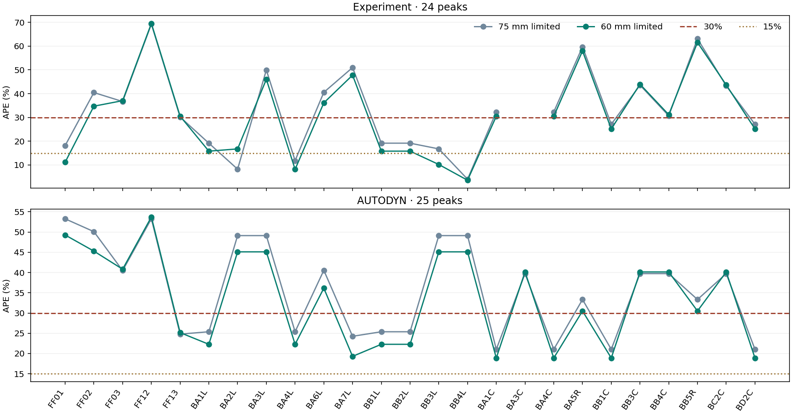
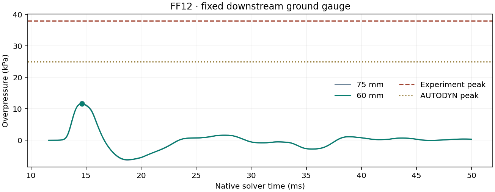
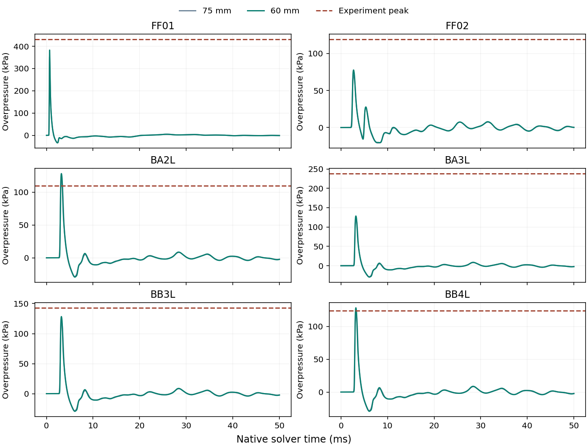

作业 8960848 · 共同观察窗 0–50.000 ms。25 条时程完整。
实测全组 31.19%，固定六点 20.40%。
论文 AUTODYN全组 33.46%，固定六点 45.84%。



| 测点 | 仿真峰值 kPa | 峰时 ms | 实测峰值 kPa | 75 mm 实测 APE | 实测 APE | AUTODYN 峰值 kPa | 75 mm 论文 APE | 论文 APE |
|---|---|---|---|---|---|---|---|---|
| FF01 | 382.95 | 0.68 | 431.00 | 18.14% | 11.15% | 755.00 | 53.27% | 49.28% |
| FF02 | 77.68 | 2.71 | 119.00 | 40.47% | 34.72% | 142.00 | 50.11% | 45.30% |
| BA2L | 128.43 | 3.21 | 110.00 | 8.22% | 16.75% | 234.00 | 49.13% | 45.12% |
| BA3L | 128.43 | 3.21 | 238.00 | 49.98% | 46.04% | 234.00 | 49.13% | 45.12% |
| BB3L | 128.43 | 3.21 | 143.00 | 16.76% | 10.19% | 234.00 | 49.13% | 45.12% |
| BB4L | 128.43 | 3.21 | 124.00 | 4.00% | 3.57% | 234.00 | 49.13% | 45.12% |
| 测点 | 仿真峰值 kPa | 峰时 ms | 实测峰值 kPa | 75 mm 实测 APE | 实测 APE | AUTODYN 峰值 kPa | 75 mm 论文 APE | 论文 APE |
|---|---|---|---|---|---|---|---|---|
| FF01 | 382.95 | 0.68 | 431.00 | 18.14% | 11.15% | 755.00 | 53.27% | 49.28% |
| FF02 | 77.68 | 2.71 | 119.00 | 40.47% | 34.72% | 142.00 | 50.11% | 45.30% |
| FF03 | 29.59 | 8.66 | 47.00 | 36.69% | 37.05% | 50.00 | 40.49% | 40.83% |
| FF12 | 11.57 | 14.62 | 38.00 | 69.27% | 69.56% | 25.00 | 53.28% | 53.73% |
| FF13 | 9.73 | 10.42 | 14.00 | 30.17% | 30.51% | 13.00 | 24.80% | 25.16% |
| BA1L | 10.10 | 9.10 | 12.00 | 19.16% | 15.80% | 13.00 | 25.38% | 22.28% |
| BA2L | 128.43 | 3.21 | 110.00 | 8.22% | 16.75% | 234.00 | 49.13% | 45.12% |
| BA3L | 128.43 | 3.21 | 238.00 | 49.98% | 46.04% | 234.00 | 49.13% | 45.12% |
| BA4L | 10.10 | 9.10 | 11.00 | 11.81% | 8.15% | 13.00 | 25.38% | 22.28% |
| BA6L | 72.16 | 5.14 | 113.00 | 40.56% | 36.14% | 113.00 | 40.56% | 36.14% |
| BA7L | 17.75 | 6.39 | 34.00 | 50.99% | 47.78% | 22.00 | 24.26% | 19.30% |
| BB1L | 10.10 | 9.10 | 12.00 | 19.16% | 15.80% | 13.00 | 25.38% | 22.28% |
| BB2L | 10.10 | 9.10 | 12.00 | 19.16% | 15.80% | 13.00 | 25.38% | 22.28% |
| BB3L | 128.43 | 3.21 | 143.00 | 16.76% | 10.19% | 234.00 | 49.13% | 45.12% |
| BB4L | 128.43 | 3.21 | 124.00 | 4.00% | 3.57% | 234.00 | 49.13% | 45.12% |
| BA1C | 9.73 | 9.52 | 14.00 | 32.32% | 30.49% | 12.00 | 21.04% | 18.90% |
| BA3C | 105.34 | 3.88 | — | — | — | 176.00 | 39.74% | 40.15% |
| BA4C | 9.73 | 9.52 | 14.00 | 32.32% | 30.49% | 12.00 | 21.04% | 18.90% |
| BA5R | 18.07 | 8.30 | 43.00 | 59.70% | 57.98% | 26.00 | 33.35% | 30.50% |
| BB1C | 9.73 | 9.52 | 13.00 | 27.11% | 25.14% | 12.00 | 21.04% | 18.90% |
| BB3C | 105.34 | 3.88 | 188.00 | 43.59% | 43.97% | 176.00 | 39.74% | 40.15% |
| BB4C | 105.34 | 3.88 | 153.00 | 30.68% | 31.15% | 176.00 | 39.74% | 40.15% |
| BB5R | 18.07 | 8.30 | 47.00 | 63.13% | 61.56% | 26.00 | 33.35% | 30.50% |
| BC2C | 105.34 | 3.88 | 187.00 | 43.28% | 43.67% | 176.00 | 39.74% | 40.15% |
| BD2C | 9.73 | 9.52 | 13.00 | 27.11% | 25.14% | 12.00 | 21.04% | 18.90% |
BA3C 保留完整仿真时程，原表无可计分实测峰值。